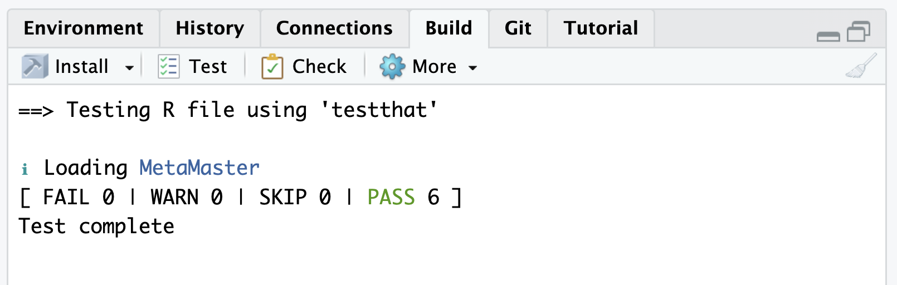
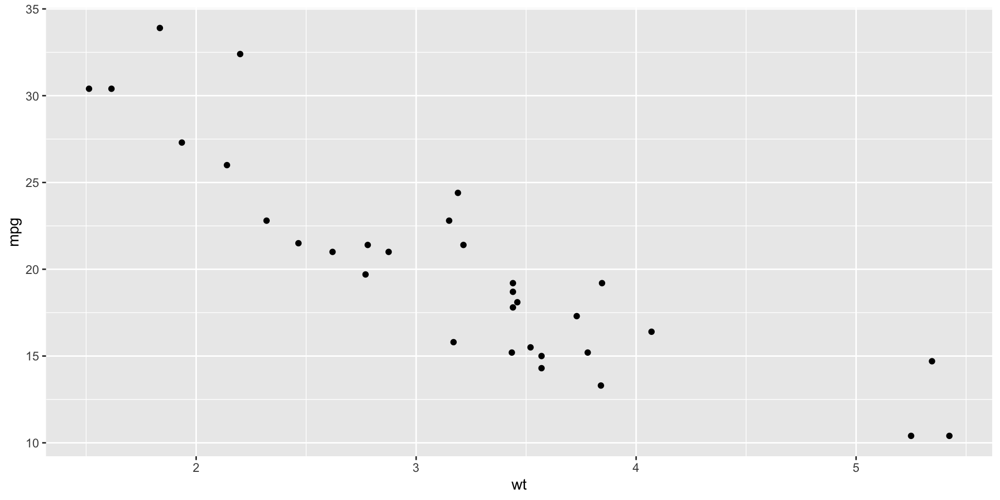
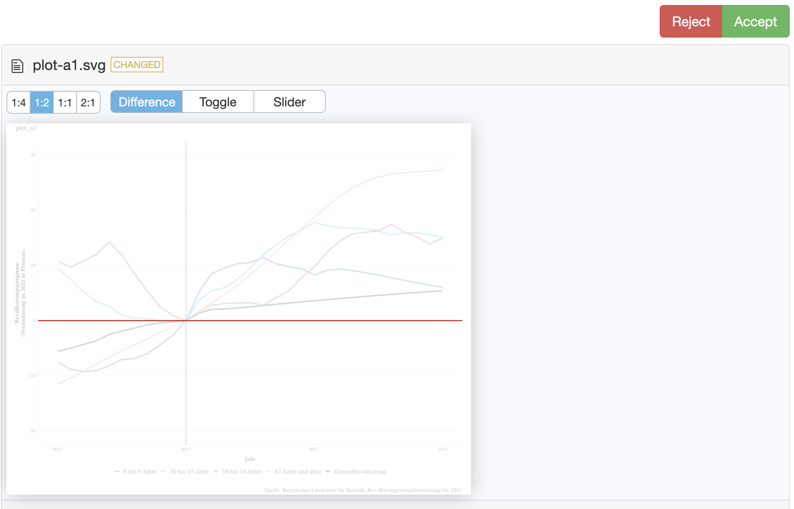
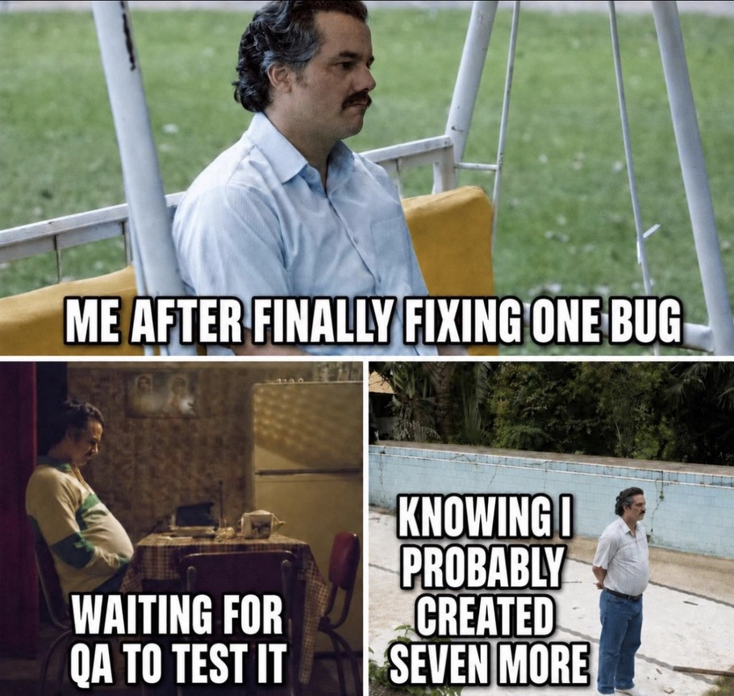

Testing
Should be fun, right?
2026-08-29
Agenda
- Testing Intro
- Testthat Functions
- Types of Testing
- Getting dirty
01 Testing Intro
Testthat
Write code → Define expectations → Run tests → Catch problems
testthat is the standard way for writing tests. Define what the code is expected to do, testthat automatically checks whether those expectations are met.
Instead of manually checking results every time code changes, we can write tests once and run them repeatedly.

Testthat in a Nutshell
Arrange → Act → Assert

✋ Testthat has several expect_* functions to test expectations.
Testthat in your workflow
Testthat runs automatically in an R CMD Check, include it in your CI/CD pipeline, period!

Plus: usethis helps with the setup and to add new tests:
expect_equal
Checks if two values are equal 🟰
── Failure: expect_equal checks equality ───────────────────────────────────────
Expected `c("apple", "banana")` to equal `c("apple", "kiwi")`.
Differences:
1/2 mismatches
x[2]: "banana"
y[2]: "kiwi"Error:
! Test failed with 1 failure and 1 success.Pytest
Write code → Define assertions → Run tests → Catch problems
pytest is the most popular way to write tests in Python. Define what the code is expected to do using simple assert statements, and pytest automatically checks whether those expectations are met.

02 Testthat Functions
expect_identical
Checks if objects are exactly identical 👯♂️
Similar to expect_equal(), but stricter.
expect_true
Checks if an expression evaluates to TRUE
expect_false
Checks if an expression evaluates to FALSE
expect_null
Checks that the result is NULL
── Failure: expect_null checks for NULL ────────────────────────────────────────
Expected `result` to be NULL.
Differences:
`actual` is a double vector (0)
`expected` is NULLError:
! Test failed with 1 failure and 0 successes.expect_length, expect_type & expect_s3_class
Checks the length, type, class of an object 🐴
expect_error
Checks if code produces an error ❌
✓ expect_error: error detectedexpect_warning
Checks that code produces a warning. ⚠️
import warnings
def square_me(x):
if x < 0:
warnings.warn("Negative value")
return x ** 2
def test_expect_warning():
with warnings.catch_warnings(record=True) as caught:
warnings.simplefilter("always")
square_me(-5)
if caught:
print("✓ Warning detected")
else:
print("✗ No warning detected")
test_expect_warning()✓ Warning detected03 Test Types
Unit tests
A unit test tests the smallest meaningful piece of code, usually a function, method, or class. They’re the foundation of an automated test suite. Unit tests are usually:
- Fast
- Numerous
- Automated
- Isolated from databases, networks, external services, etc.
Unit Testing
- Test main logic
- Test weird/boundary cases too
- And potentially invalid input
My First Unit Test
Suppose you work on a function to like this:
Add a simple unit test:
What if …
R returns silently NaN and not an error if user 0 as input
The expect_error function would have informed us about this bug:
Update the Example Function
And test again:
Smoke Test
Is this build stable enough for us to bother testing it further? Can we build it?
Example Run Pipeline
Test it …
Regression testing
Did something that used to work stop working because of a change?
Regression testing attempts to catch these unintended consequences due to code development.
── Failure: pipeline does not introduce missing predictions ────────────────────
Expected `any(is.na(result$predictions))` to be FALSE.
Differences:
`actual`: TRUE
`expected`: FALSEError:
! Test failed with 1 failure and 0 successes.Snap shots

Snapshotting a ggplot
The vdiffr packages saves a reference plot when the test runs for the first time and compares the result of plot function with the reference
Snap shots
Testthat throws an error and ask you to assess changes via snapshot_review(). This opens the viewer and shows the changes:

✋ Reject or Accept
04 Ado
Test coverage (htmlcov/covr)
“Track test coverage for your R package and view reports locally or (optionally) upload the results to codecov or coveralls. (Hester 2023)”
The End
